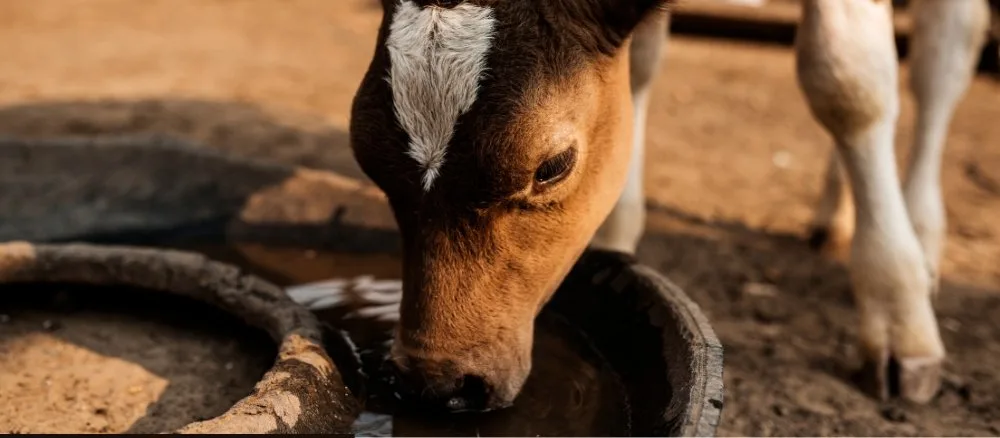
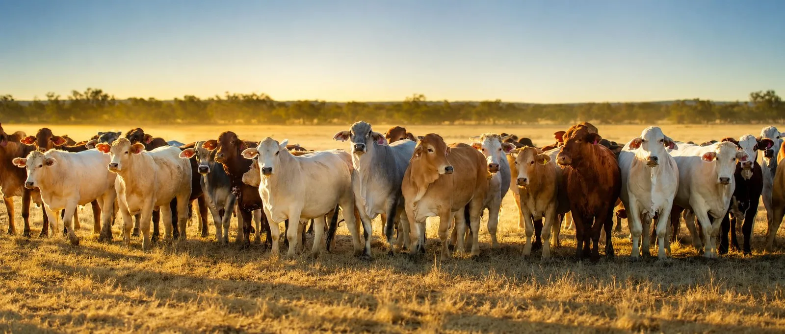

Why Clean Water Is Essential for Cattle & Buffalo Health
Water is life—not just for humans but for cattle and buffaloes too. Just like us, these animals need clean and fresh water every day to stay healthy, grow well, and produce better milk.
Many farmers focus on feeding their livestock with the best quality fodder, grains, and supplements, but often, water quality is overlooked. Providing clean water is one of the simplest and most effective ways to improve the overall health and productivity of cattle and buffaloes.

Why Water Is Essential for Cattle and Buffaloes
Water plays a critical role in an animal’s body. It helps with digestion, nutrient absorption, temperature regulation, and waste elimination. Here’s why clean water is essential for cattle and buffaloes:
Milk Production
Lactating cows and buffaloes need plenty of water to produce milk. A dairy animal drinks about 40–60 liters of water per day, and during peak lactation, this can increase up to 80–100 liters. Research shows that for every 1 liter of milk produced, cows require approximately 4–5 liters of water.
Digestion and Feed Efficiency
Water aids in breaking down fibrous feed like dry fodder and hay, improving digestion and nutrient absorption. Studies indicate that cattle consuming clean water show a 15% increase in feed intake compared to those drinking dirty water.
Temperature Regulation
Cattle and buffaloes rely on water to maintain body temperature, especially during hot summers. Water loss through sweating and respiration needs to be replenished to prevent heat stress.
Growth and Weight Gain
Young calves and growing animals require adequate hydration for muscle development and body weight gain.
Dehydration can lead to a 10–20% reduction in growth rate.
Effects of Dirty or Contaminated Water

Providing unclean or stagnant water to cattle and buffaloes can have serious consequences.
Some of the common problems caused by contaminated water include:
- Disease Transmission: Waterborne diseases like leptospirosis, salmonella, and E. coli infections spread through dirty water, causing diarrhea, fever, and reduced productivity.
- Reduced Feed Intake and Growth: Animals that drink dirty water often eat less, leading to poor growth and weak immunity. Studies show that water contamination can reduce weight gain by 20–30%.
- Lower Milk Yield: Dehydration or poor water quality directly impacts milk production, reducing farm profitability. Research indicates that cows drinking clean water produce 1–2 liters more milk per day than those drinking contaminated water.
- Toxicity and Poisoning: Water from polluted sources may contain harmful substances like pesticides, heavy metals, and excess nitrates, leading to poisoning and long-term health issues.
- Parasitic Infections: Stagnant and unclean water bodies are breeding grounds for parasites like liver flukes, which affect digestion and overall health.
The Cost of Inaction: Economic Losses Due to Poor Water Quality
Ignoring water quality can have significant financial implications for farmers:
Milk Production Losses
A 10% drop in milk yield due to dehydration or poor water intake can lead to a loss of ₹2,500–₹3,000 per cow per month (assuming an average yield of 10 liters/day at ₹25/liter).
Increased Veterinary Expenses
Diseases caused by contaminated water can increase medical costs by ₹1,000–₹2,000 per animal annually.
Poor Growth Rates
Reduced weight gain in calves and young animals can delay their market value, resulting in lower profits.
Higher Mortality Rates
Severe dehydration and waterborne diseases can lead to increased mortality, causing significant losses in livestock investment.
How to Ensure Clean Water for Cattle and Buffaloes
-
Regularly Clean Water Troughs and Containers:
- Algae, mud, and feed debris can collect in water troughs. Clean them at least once a week to prevent bacterial growth.
- Use a brush or scrubbing pad to remove any slime or dirt.
-
Provide Fresh Water Daily:
- Always check and refill water sources to ensure a constant supply of fresh and clean water.
- Avoid using stagnant ponds or dirty canals as primary water sources.
-
Ensure Proper Drainage Around Water Sources:
- Standing water around drinking areas can attract flies, mosquitoes, and harmful bacteria.
- Maintain a dry and clean area around troughs to reduce contamination.
-
Use Covered or Elevated Water Sources:
- Open water sources like ponds or uncovered tanks can collect dirt, leaves, bird droppings, and insects.
- Use covered water tanks and elevated troughs to keep water cleaner for longer.
-
Filter and Treat Water If Necessary:
- If you use well water or water from rivers, check for contamination by testing its quality.
- Simple filtration systems or boiling water can help prevent disease outbreaks.
-
Prevent Animals from Drinking Stagnant or Polluted Water:
- Animals should not drink from dirty ponds, ditches, or puddles, as these can contain parasites and bacteria.
- Fencing off dirty water sources can prevent accidental drinking.
-
Use Automatic Waterers for Large Dairy Farms:
- For big dairy farms, automatic watering systems ensure cattle and buffaloes get fresh water throughout the day.
- These systems reduce wastage and minimize contamination risk.
Signs of Dehydration and Water-Related Issues in Cattle and Buffaloes
Even with good management, it’s essential to observe your animals daily for signs of dehydration or illness due to poor water intake:
- Sunken eyes and dry skin
- Reduced milk production
- Lethargy and weakness
- Dry and hard feces, showing poor digestion
- Low appetite and slow growth
- Frequent infections or diarrhea
If you notice these signs, check water availability and quality immediately.
Economic Benefits of Providing Clean Water
Farmers often focus on improving feed quality and medical care, but clean water is an equally important and cost-effective investment.
By ensuring clean drinking water, you can achieve:
- Higher milk yield in dairy cattle and buffaloes.
- Better weight gain for meat production.
- Stronger immunity, reducing veterinary costs.
- Improved reproductive success and healthier calves.
- Savings of ₹5,000–₹10,000 per year per animal by preventing waterborne diseases and dehydration-related losses.
Conclusion
Water is one of the cheapest yet most valuable resources on a farm. Ensuring clean, fresh water for cattle and buffaloes is not just about their survival but also about maximizing milk production, improving health, and reducing disease risks.
Simple steps like cleaning troughs, using proper storage, and avoiding contamination can make a significant difference.
Remember, healthy animals lead to a successful dairy farm. By making clean water a priority, farmers can ensure the well-being of their cattle and buffaloes while improving overall farm efficiency and profits.
¿Querés mejorar la calidad de tu agua?
Solicitá asesoramiento sin costo y un asesor te contactará para evaluar tu caso.